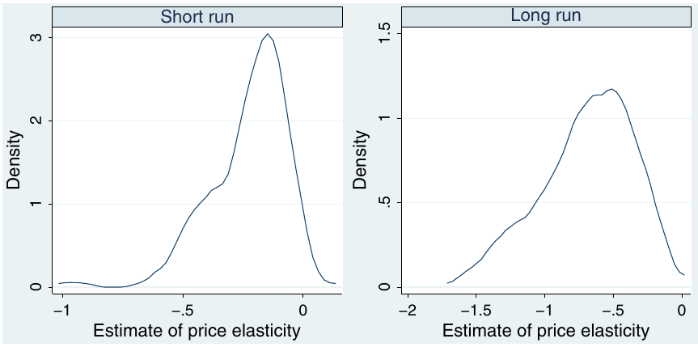
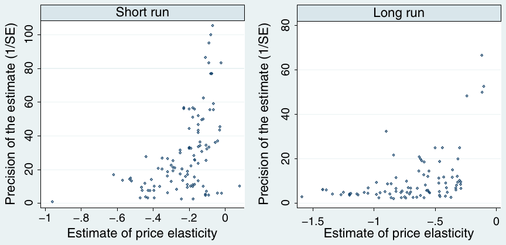
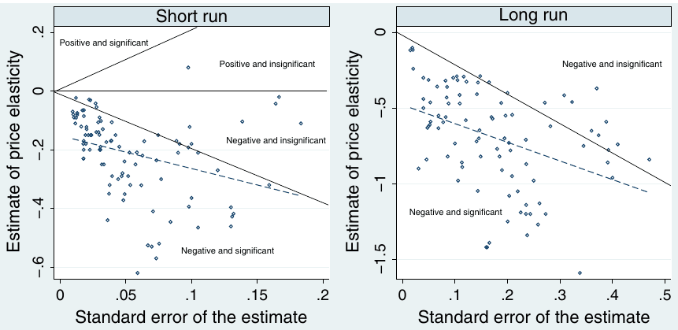

Demand for Gasoline is More Price-Inelastic than Commonly Thought
Tomas Havranek, Zuzana Irsova, and Karel Janda (2012), "Demand for Gasoline is More Price-Inelastic than Commonly Thought," Energy Economics 34(1), pp. 201-207. https://doi.org/10.1016/j.eneco.2011.09.003.
Tomas Havraneka,b,* | Zuzana Irsovab | Karel Jandab,c,d,e
aCzech National Bank, Research Department, Prague, Czech Republic
bCharles University, Institute of Economic Studies, Prague, Czech Republic
cUniversity of California, Berkeley, CA, USA
dUniversity of Economics, Prague, Czech Republic
eCERGE-EI, Prague, Czech Republic
Corresponding author at: Czech National Bank, Research Department, Czech Republic. E-mail address: tomas.havranek@ies-prague.org (T. Havranek).
We thank Martijn Brons and two anonymous reviewers for helpful comments on an earlier draft of the paper. We acknowledge financial support of the Grant Agency of Charles University (grant #76810), the Grant Agency of the Czech Republic (grant #P402/11/0948), and research projects MSM0021620841 and SVV 261 501. The views expressed here are ours and not necessarily those of our institutions. All remaining errors are solely our responsibility.
Article history Received 10 February 2011; Received in revised form 2 September 2011; Accepted 4 September 2011; Available online 24 September 2011
JEL classification C83; Q41; Q48
Abstract
One of the most frequently examined statistical relationships in energy economics has been the price elasticity of gasoline demand. We conduct a quantitative survey of the estimates of elasticity reported for various countries around the world. Our meta-analysis indicates that the literature suffers from publication selection bias: insignificant or positive estimates of the price elasticity are rarely reported, although implausibly large negative estimates are reported regularly. In consequence, the average published estimates of both short- and long-run elasticities are exaggerated twofold. Using mixed-effects multilevel meta-regression, we show that after correction for publication bias the average long-run elasticity reaches −0.31 and the average short-run elasticity only −0.09.
Keywords: Gasoline demand, Price elasticity, Meta-analysis, Publication selection bias
1. Introduction
For the purposes of government policy concerning energy security, optimal taxation, and climate change, precise estimates of the price elasticity of gasoline demand are of principal importance. For example, if gasoline demand is highly price-inelastic, taxes will be ineffective in reducing gasoline consumption and the corresponding emissions of greenhouse gases. During the last 30 years the topic has attracted a lot of attention of economists who produced a plethora of empirical estimates of both short- and long-run price elasticities. Yet the estimates vary broadly.
A systematic method how to make use of all this work is to collect these numerous estimates and summarize them quantitatively. The method is called meta-analysis (Stanley, 2001) and has long been used in economics following the seminal contribution by Stanley and Jarrell (1989). Recent applications of meta-analysis in economics include, among others, Card et al. (2010) on the evaluation of active labor market policy, Havranek (2010) on the trade effect of currency unions, and Horvathova (2010) on the impact of environmental performance on corporate financial performance.
Two international meta-analyses of the elasticity of gasoline demand have been conducted (Brons et al., 2008; Espey, 1998). These meta-analyses study carefully the causes of heterogeneity observed in the literature. The average short- and long-run elasticities found by these meta-analyses were −0.26 and −0.58 (Espey, 1998) and −0.34 and −0.84 (Brons et al., 2008). None of the meta-analyses, however, corrected the estimates for publication bias. It is well-known that publication selection can seriously bias the estimates of price elasticities because positive estimates are usually inconsistent with theory: for instance, Stanley (2005) documents how the price elasticity of water demand is exaggerated fourfold because of publication bias.
Publication selection bias, long recognized as a serious issue in empirical economics research (Ashenfelter and Greenstone, 2004; Card and Krueger, 1995; Delong and Lang, 1992), arises when statistically significant estimates or estimates with a particular sign are preferentially selected for publication. The bias stems from the preference of authors, editors, or reviewers for results that tell a story and are theory-consistent. Publication bias has been found in many areas of empirical economics (Doucouliagos and Stanley, 2008).
The effects of publication selection differ at the study and literature levels. At the study level it is reasonable not to base discussion on the estimates of the price elasticity of gasoline demand that are positive—few would consider gasoline to be a Giffen good, and positive estimates are thus most likely due to misspecifications. On the other hand, it is far more difficult to identify large negative estimates that are also due to misspecifications. If all researchers discard positive estimates of the price elasticity but keep large negative estimates, the average impression derived from the literature will be biased toward stronger elasticity. Thus, at the literature level the mean estimate must be corrected for publication bias.
We employ recently developed meta-analysis methods to test for publication bias and estimate the corrected elasticity beyond. The mixed-effects multilevel meta-regression takes into account heteroscedasticity, which is inevitable in meta-analysis, and between-study heterogeneity, which is likely to occur in most areas of empirical economics. We do not, however, investigate heterogeneity explicitly, as this issue was thoroughly examined by the two previous meta-analyses.
The paper is structured as follows. Section 2 discusses the process of selecting studies to be included in the meta-analysis and the properties of the data. Section 3 describes the meta-analysis methods used to detect and correct for publication bias. Section 4 discusses the results of the meta-regression. Section 5 concludes.
2. The elasticity estimates data set
The first step of meta-analysis is the collection of primary studies. We examined all studies used by the most recent meta-analysis (Brons et al., 2008), but because the sample used by Brons et al. (2008) ends in 1999, we additionally searched the EconLit and Scopus databases for new studies published between 2000 and 2011. To be able to use modern meta-analysis methods and correct for publication bias, we need the standard error of each estimate of elasticity; therefore we have to exclude studies that do not report standard errors (or any other statistics from which standard errors could be computed). Concerning the definition of short- and long-term elasticity estimates, we follow the approach described in the first meta-analysis on this topic, Espey (1998).
Some meta-analysts argue for using estimates from all available studies in hope that the inclusion of unpublished studies will alleviate publication bias. Nevertheless, rational authors of primary studies are likely to polish even early drafts of their papers as they prepare for journal submission, or may use the intuitive sign of the estimate as a specification check. In a large survey of economics meta-analyses, Doucouliagos and Stanley (2008) document that the inclusion of working papers does not help mitigate publication bias. Hence we follow, among others, Abreu et al. (2005) and collect estimates only from studies published in peer-reviewed journals—as a simple criterion of quality.1 In sum, our sample consists of 202 estimates of the price elasticity of gasoline demand taken from 41 journal articles.
All studies included in our meta-analysis are listed in Table 1. The oldest study in our sample was published in 1974 and the most recent in 2011. Energy Economics appears to be the primary outlet for this literature—13 studies, one third of the entire usable literature, were published in Energy Economics, as well as both previous meta-analyses of the elasticity of gasoline demand.
| Abdel-khalek (1988) | Drollas (1984) | Pock (2010) |
|---|---|---|
| Akinboade et al. (2008) | Eltony (1993) | Ramanathan (1999) |
| Alves and Bueno (2003) | Eltony and Al-Mutairi (1995) | Ramsey et al. (1975) |
| Archibald and Gillingham (1980) | Gallini (1983) | Reza and Spiro (1979) |
| Archibald and Gillingham (1981) | Houthakker et al. (1974) | Sipes and Mendelsohn (2001) |
| Baltagi and Griffin (1983) | Iwayemi et al. (2010) | Sterner (1991) |
| Baltagi and Griffin (1997) | Kennedy (1974) | Storchmann (2005) |
| Bentzen (1994) | Kim et al. (2011) | Tishler (1983) |
| Berndt and Botero (1985) | Kraft and Rodekohr (1978) | Uri and Hassanein (1985) |
| Berzeg (1982) | Kwast (1980) | Wadud et al. (2009) |
| Crôtte et al. (2010) | Lin et al. (1985) | West and Williams (2007) |
| Dahl (1978) | Manzan and Zerom (2010) | Wheaton (1982) |
| Dahl (1979) | Mehta et al. (1978) | Wirl (1991) |
| Dahl (1982) | Nicol (2003) |
Out of the 202 estimates we collected, 110 are short-run elasticities and 92 long-run ones. Summary statistics for these estimates of elasticities are reported in Table 2: the estimates of the short-run elasticity range from −0.96 to 0.08 with the mean estimate −0.23; the estimates of long-run elasticity range from −1.59 to −0.10 with the mean estimate reaching −0.69. Thus the simple averages of the estimates of both the short- and long-run elasticity in our sample are close to those reported by the earlier meta-analyses (Brons et al., 2008; Espey, 1998). If there is publication selection bias against positive (or insignificant negative) estimates of elasticities, however, these simple averages will overstate the true elasticity.
| Variable | Observations | Mean | Median | Std. dev. | Min | Max |
|---|---|---|---|---|---|---|
| Short-run elasticity | 110 | −0.227 | −0.190 | 0.158 | −0.960 | 0.080 |
| Long-run elasticity | 92 | −0.691 | −0.632 | 0.332 | −1.590 | −0.102 |
Fig. 1 depicts the kernel density of the estimates of short- and long-run elasticities; we use the Epanechnikov kernel in the estimation. It is apparent that both distributions are strongly skewed. Positive estimates of the price elasticity of gasoline demand are rarely published, so that the negative (that is, left-hand-side) tails of the distributions get much heavier. This suggests that something more than pure sampling error is driving the distribution of the results: by no means are they distributed normally around a hypothetical true effect, which is also confirmed by goodness-of-fit tests. Normal distribution of the estimated elasticities in the absence of publication bias is a standard assumption in meta-analysis (Stanley, 2005, 2008), which stems from the fact that individual researchers estimate elasticities as regression parameters (assuming t-distribution, which is close to normal in large samples). Nevertheless, more specialized methods are needed to establish evidence for the presence of publication bias.

3. Meta-analysis methodology
A common method of assessing publication bias is an examination of the so-called funnel plot (Stanley and Doucouliagos, 2010; Sutton et al., 2000). The funnel plot depicts the estimated elasticity on the horizontal axis against the precision of the estimate of elasticity (the inverse of the standard error) on the vertical axis. The most precise estimates will be close to the true effect, but the less precise ones will be more dispersed; in consequence the cloud of estimates should resemble an inverted funnel. When the literature is free of publication bias the funnel will be symmetrical around the values with the highest precision since all imprecise estimates of elasticity will have the same chance of being reported. While the funnel plot is a useful device, formal econometric methods are needed to estimate precisely the true elasticity beyond publication bias.
In the absence of publication bias the estimates of elasticities are randomly distributed around the true mean elasticity, . Nevertheless, if some estimates end in the "file drawer" (Rosenthal, 1979) because they are insignificant or have a positive sign, the reported estimates will be correlated with their standard errors (Ashenfelter et al., 1999; Card and Krueger, 1995):
where denotes the estimate of elasticity, is the average underlying elasticity, is the standard error of measures the magnitude of publication bias, and is a disturbance term. For example, if a statistically significant effect is required, an author who has few observations may run a specification search until the estimate becomes large enough to offset the high standard errors. Specification (1) can also be interpreted as a test of the asymmetry of the funnel plot; it follows from rotating the axes of the plot and inverting the values on the new horizontal axis. A significant estimate of then provides formal evidence for funnel asymmetry. Because specification (1) is likely heteroscedastic (the explanatory variable is a sample estimate of the standard deviation of the response variable), in practice it is usually estimated by weighted least squares (Stanley, 2005, 2008):
Monte Carlo simulations and many recent meta-analyses suggest that this parsimonious specification is also effective in testing the significance of the true elasticity beyond publication bias, coefficient (Stanley, 2008).
In meta-analysis we have to take into consideration that estimates coming from one study are likely to be dependent. A common way how to cope with this problem is to employ the mixed-effects multilevel model (Doucouliagos and Stanley, 2009), which allows for unobserved between-study heterogeneity. Between-study heterogeneity is likely to be substantial since in our case the primary studies use data from different countries. We specify the model following Havranek and Irsova (forthcoming):
where and denote estimate and study subscripts. The overall error term () now breaks down into study-level random effects () and estimate-level disturbances (). The variance of these error terms is additive because both components are assumed to be independent: , where denotes between-study variance (that is, between-study heterogeneity) and within-study variance. When approaches zero the benefit of using the mixed-effect multilevel estimator instead of simple ordinary least squares (OLS) becomes negligible; we will use likelihood-ratio tests to examine this condition.
The mixed-effects multilevel model is analogous to the random-effects model commonly used in panel-data econometrics. The terminology, however, follows hierarchical data modeling: the model is called "mixed-effects" since it contains a fixed () as well as a random part (). For the purposes of meta-analysis the multilevel framework is more suitable because it takes into account the unbalancedness of the data (the maximum likelihood estimator is used instead of generalized least squares) and allows for nesting multiple random effects (author-, study-, or country-level), and is thus more flexible.
The high degree of unbalancedness of the data in meta-analysis makes a reliable testing of the exogeneity assumptions behind the mixed-effects model difficult; fixed effects in the panel-data sense are generally inappropriate for meta-analysis since some studies report only one usable estimate. We follow the recommendation of an authoritative survey of meta-analyses in environmental and resource economics (Nelson and Kennedy, 2009, p. 358): "The advantages of random-effects estimation [in meta-analysis] are so strong that this estimation procedure should be employed unless a very strong case can be made for its inappropriateness." As a robustness check, however, we also employ OLS with clustered standard errors. Large differences between the estimates based on OLS and on mixed effects may signal a violation of the exogeneity assumptions.
Specification (3) enables us to examine the significance and magnitude of publication bias () and the significance of the true elasticity beyond publication bias (). To examine the magnitude of the true elasticity, Stanley and Doucouliagos (2007, 2011) recommend an augmented version of (3); this specification is also supported as the best method to correct for publication bias by a survey of meta-analysis methods published in the British Medical Journal (Moreno et al., 2009). The specification is based on the assumption that the relation between standard errors and publication bias in (1) is quadratic; the model is called the Heckman meta-regression (see Stanley and Doucouliagos, 2007, for details). When heteroscedasticity and between-study heterogeneity are taken into account, the specification assumes the following form:
where measures the magnitude of the average elasticity corrected for publication bias.
In this paper we concentrate on the average estimate of elasticity and do not investigate the sources of heterogeneity in the estimates since heterogeneity was carefully examined by the previous meta-analyses. Also the measure of publication selection bias estimated in specification (3) is mean across all countries and methods used for estimation in primary studies. Nevertheless, it would be useful to find out whether some aspects of primary studies are associated with more publication bias than others. For this exercise we select three aspects identified as important for the differences in reported estimates by the previous meta-analyses: the use of US against non-US data, the use of time-series against cross-sectional data, and study publication date. We employ the methodology of Stanley et al. (2008), who interact publication bias and study aspects in meta-regression (1). After weighting by the standard error and adding study-level random effects the specification becomes
where usdata is a dummy variable that equals one if the primary study uses data for the US to estimate the particular elasticity and zero otherwise, csection is a dummy variable that equals one if the primary study uses data with a cross-sectional dimension (including panel data) and zero otherwise, pubdate denotes the year of publication of the primary study, and other variables have the same properties as in specification (3).
4. Results
Fig. 2 depicts funnel plots for the estimates of short- and long-run price elasticities of gasoline demand. The funnels are heavily asymmetrical: the right-hand part of the funnels is almost completely missing, hence we have a good reason to believe that publication selection bias in this literature is strong. The estimates with the highest precision are negative but small in magnitude, positive estimates are almost never published, while imprecise negative estimates are published regularly—therefore the average reported estimate is likely to be biased downwards.

The formal test of publication bias, described by regression (1), follows directly from the funnel plot—hence, it is often called the funnel asymmetry test. We illustrate the transition from the funnel plot to the funnel asymmetry test in Fig. 3. In this scatter plot the size of the estimates of elasticities is depicted on the vertical axis; the horizontal axis measures the standard errors of the estimates. (Compared with the funnel plot, the axes are switched and the values on the new horizontal axis are inverted.) For the short-run elasticities, a few estimates with extremely large standard errors are cut from the figure so that the overall pattern can be seen. Now, if we interpret Fig. 3 as a regression relationship, we get Eq. (1).

Nevertheless, in regression (1) publication bias is only related to the standard error and, thus, seemingly only to statistical significance. It remains to be shown that this test captures both sources of publication bias: the one stemming from the selection of the significant estimates (type II bias in the terminology of Stanley, 2005) and the one stemming from the selection of the estimates with an intuitive sign (type I bias). The suitability of the funnel asymmetry test to filter out both sources of publication bias is often stated in the meta-analysis literature (for instance, Doucouliagos and Paldam, 2009), but rarely discussed in detail.2
If no publication bias was present, the observations in Fig. 3 would form an isosceles triangle with the tip pointing to the most precise estimate of the elasticity; regressing the estimates on their standard errors would yield no statistically significant slope coefficient. First, let us suppose that only negative estimates, irrespective of their statistical significance, were reported. In such a case the triangle would lose its upper part. Regression (1) would yield a negative slope coefficient, evidence of publication bias. Second, let us assume that researchers suppress estimates insignificant at the 5% level, irrespective of the sign. In Fig. 3 we depict the boundary of significance at the 5% level: the solid lines show the combinations of the magnitudes of estimates and their standard errors for which the corresponding t-statistic equals two in the absolute value. In the case of type II publication bias the triangle would lose its middle part (no estimates with would be reported). Because the true elasticity is most likely negative, few positively significant estimates would appear, and regression (1) would again yield a negative slope coefficient, a sign of publication bias.3
Fig. 3, especially the left panel depicting short-run elasticities, suggests that both sources of publication bias play a role in the empirical literature on gasoline demand. Statistical significance is important; insignificant negative estimates of price elasticities seem to be much less likely to get published than the significant negative estimates. In the absence of type II publication bias, the negative estimates should be approximately symmetrical with respect to the line, but in this case the insignificant estimates are apparently underrepresented.
The sign of the estimate is important as well. In the absence of type I publication bias, all estimates should be symmetrical with respect to the line, where denotes the true elasticity (approximately −0.09 for the short run, as will be shown later). In such a case, we should observe more positive estimates, including a few significant ones due to the laws of chance. There are, however, unlikely to be any positive but precise estimates of price elasticities. In fact, if the true elasticity was large enough and the estimation methods were precise enough, we would only observe negative estimates of price elasticities even in the absence of publication bias. But then the funnel plot would be symmetrical, although all observed estimates would have the same sign, as noted by Doucouliagos and Stanley (2009); this is not the case of Fig. 2.
The dotted line in Fig. 3 shows a linear fit based on regression (1): its negative slope indicates publication bias. In the end the regression computes the average estimate of elasticity conditional on the standard error being close to zero. In other words, it looks for a hypothetical estimate with infinite precision, and in Fig. 3 the infinitely precise estimate would be represented by the intercept of the dotted line with the vertical axis. Nevertheless, as discussed in Section 3, because of heteroscedasticity and between-study heterogeneity regression (1) is rarely estimated itself.
Table 3 summarizes the results of a regression based on specification (3) [the mixed-effects weighted-least-squares version of (1)]. The regression is estimated separately for the short- and long-run elasticity to obtain precise estimates of these individual elasticities in the later stage of our analysis. Likelihood-ratio tests reject the null hypothesis, which suggests that between-study heterogeneity is substantial, the OLS is misspecified, and the mixed-effects model is thus more reliable. Moreover the differences between the OLS and the mixed-effects model are small, indicating that the exogeneity assumptions behind the mixed-effects model are not seriously violated. We also estimated several nested models with additional author- and country-level random effects, but according to likelihood-ratio tests these models do not significantly differ from the baseline model that only accounts for between-study heterogeneity.
| Mixed-effects multilevel | Clustered OLS | |||
|---|---|---|---|---|
| Response variable: t-statistic | Short run | Long run | Short run | Long run |
| Constant (publication bias) | −2.587*** | −2.491*** | −2.890*** | −3.570*** |
| (0.465) | (0.707) | (0.595) | (0.808) | |
| 1/SE | −0.0611*** | −0.237*** | −0.0651*** | −0.189* |
| (0.0111) | (0.0393) | (0.0152) | (0.111) | |
| Observations | 110 | 92 | 110 | 92 |
| Likelihood-ratio test () | 21.78*** | 19.71*** |
Notes: Standard errors, clustered at the study level for OLS, in parentheses. Null hypothesis for the likelihood-ratio test: no between-study heterogeneity (that is, the mixed-effects multilevel model has no benefit over OLS). ***, **, and * denote significance at the 1%, 5%, and 10% levels.
As expected after examining the funnel plots, the meta-regression identifies downward publication bias, significant at the 1% level for all specifications. In all cases the intensity of publication bias, , is also larger than two in the absolute value. According to Doucouliagos and Stanley (2008), such magnitude of publication bias is considered "severe" and signals serious selection efforts: if the true elasticity was zero and only significantly negative estimates were reported, the estimated coefficient for publication bias would approach two, the most commonly used critical value of the t-statistic. Publication bias in this literature is hence strong enough to produce a significant average estimate of the effect even if there was none in reality.
Nevertheless, Table 3 also shows that the estimate of the true effect (the coefficient for 1/SE) is significant at least at the 10% level for all specifications; it is significant even at the 1% level in our preferred mixed-effects model. Thus, on average, both the short- and long-run price elasticity of gasoline demand is statistically different from zero even after correcting for publication bias. To estimate the true average elasticity precisely, we need to employ the Heckman meta-regression proposed by Stanley and Doucouliagos (2007) and corroborated by Moreno et al. (2009). This is achieved by estimating regression (4); the results are reported in Table 4. Similarly to the previous case, likelihood-ratio tests suggest that the OLS is misspecified, and we therefore only discuss the results of the mixed-effects model.
| Mixed-effects multilevel | Clustered OLS | |||
|---|---|---|---|---|
| Response variable: t-statistic | Short run | Long run | Short run | Long run |
| 1/SE (true elasticity) | −0.0913*** | −0.314*** | −0.120*** | −0.307** |
| (0.0120) | (0.0334) | (0.0145) | (0.115) | |
| SE | −0.975 | −2.396 | −4.960* | −9.343*** |
| (2.094) | (2.668) | (2.558) | (3.054) | |
| Observations | 110 | 92 | 110 | 92 |
| Likelihood-ratio test () | 37.28*** | 34.45*** |
Notes: Standard errors, clustered at the study level for OLS, in parentheses. Null hypothesis for the likelihood-ratio test: no between-study heterogeneity (that is, the mixed-effects multilevel model has no benefit over OLS). ***, **, and * denote significance at the 1%, 5%, and 10% levels.
After correcting for publication bias, our best estimate indicates that the mean short-run elasticity reaches −0.09 with a 95% confidence interval (−0.12, −0.07). The corrected estimate of the long-run elasticity reaches −0.31 with a 95% confidence interval (−0.38, −0.25). This sharply contrasts to the simple uncorrected averages amounting to −0.23 and −0.69: publication bias exaggerates the average reported elasticity more than twofold. For instance, concerning the short-run elasticity, only 18 out of the 110 estimates we collected are smaller in the absolute value than the true average effect (−0.09). Therefore as much as 74 positive (or negative but insignificant) estimates of the short-run price elasticity of gasoline were likely not reported because of publication selection. In other words, about 40% of all estimated elasticities may be put into the "file drawer."
Since our preferred mixed-effects estimator not only corrects for publication bias, but also involves several other adjustments (for example, weighted least squares specification or study-specific random effects), the comparison with a simple average may not be straightforward, however. As a robustness check, using the mixed-effects model we also estimate average elasticities not corrected for publication bias. The uncorrected averages reported by mixed effects are −0.23 and −0.63 for short- and long-run elasticities; that is, very close to the simple averages (−0.23 and −0.69). Given these results, we argue that the difference between corrected estimates and simple averages is due to publication bias and not specification characteristics of the meta-regression.4
To test whether the degree of publication selection depends on study aspects, we estimate specification (5) and report the results in Table 5. In this case publication bias is no more represented by the constant only; the bias is captured by all variables with the exception of 1/SE. The coefficient for 1/SE still represents the true effect corrected for publication bias, and the results suggest that corrected estimates in Table 5 are very similar to those in Table 3 even though we now control for several study aspects. For the short-run estimates of elasticity the test of joint significance does not reject the hypothesis that the pattern of publication is the same for various study aspects. For the long-run estimates, however, the differences are statistically significant. The use of US data is associated with less publication bias,5 while the use of data with a cross-sectional dimension is associated with more bias. Finally, the magnitude of publication bias decreases in time, which is consistent with the economics-research-cycle hypothesis (Goldfarb, 1995; Stanley et al., 2008).
| Mixed-effects multilevel | Clustered OLS | |||
|---|---|---|---|---|
| Response variable: t-statistic | Short run | Long run | Short run | Long run |
| 1/SE | −0.0547*** | −0.228*** | −0.0709*** | −0.231*** |
| (0.0124) | (0.0318) | (0.0155) | (0.0770) | |
| US data | 0.375 | 1.964** | 1.090 | 2.697** |
| (0.756) | (0.942) | (0.654) | (1.089) | |
| Cross-sectional dimension | −1.270* | −2.142*** | 0.170 | −1.958*** |
| (0.769) | (0.795) | (1.217) | (0.645) | |
| Year of publication | 0.0130 | 0.0796** | 0.0366 | 0.104** |
| (0.0370) | (0.0393) | (0.0487) | (0.0475) | |
| Constant | −27.99 | −160.7** | −75.95 | −210.5** |
| (73.80) | (78.42) | (97.30) | (94.37) | |
| Observations | 110 | 92 | 110 | 92 |
| Test of joint significance | 3.47 | 18.26*** | 0.94 | 3.70** |
Notes: Standard errors, clustered at the study level for OLS, in parentheses. Null hypothesis for the test of joint significance: [see regression (5)]; Wald test is used for the mixed-effects model, F-test for OLS. ***, **, and * denote significance at the 1%, 5%, and 10% levels.
5. Conclusion
We conduct a quantitative survey of journal articles estimating the price elasticity of gasoline demand. In contrast to previous meta-analyses on this topic, we take into account publication selection bias using the mixed-effects multilevel meta-regression. Publication bias in this area is strong; when we correct for the bias, we obtain estimates of short- and long-run elasticities that are approximately half, compared to the results of the previously published meta-analyses and also to the simple mean of all estimates in our sample of literature. If the simple mean reflects our profession's impression about the magnitude of the price elasticity of gasoline demand, the impression exaggerates the true elasticity twofold.
This paper complements the previously published meta-analyses on the price elasticity of gasoline demand (Brons et al., 2008; Espey, 1998). These meta-analyses focus on the reasons why estimates of elasticities differ for different regions and different methods used and provide mean estimates of short- and long-run price elasticities as a bonus. It is important to bear in mind the differences between the methods used in this paper to deliver the average estimates of elasticity and the methods used in Espey (1998) and Brons et al. (2008). First, the estimates of Brons et al. (2008) are based on a seemingly unrelated regression model with cross-equation restrictions. Second, neither Espey (1998) nor Brons et al. (2008) use a multilevel approach to distinguish between study-level and estimate-level variation. Third, the sets of studies differ among the three meta-analyses.
Although the estimates of average elasticity are therefore not directly comparable, we argue that there is a strong case for the presence of publication bias in favor of larger negative estimates of elasticities in the literature.
The estimated elasticities corrected for publication bias, −0.09 for the short run and −0.31 for the long run, are average across many countries, methods, and time periods; we report them as reference values. A similar pattern of publication bias, however, is likely to appear in any subset of the literature. Thus large negative estimates of price elasticities should be taken with a grain of salt.
Concerning future research, authors interested in figures for individual countries may collect more estimates from working papers, dissertations, and other mimeographs, which should provide enough degrees of freedom to estimate the price elasticity of gasoline demand for each country using the methodology described in this paper. Next, since previous meta-analyses suggest that study design may affect results in a systematic way, researchers could define best-practice methodology and estimate price elasticities conditional on such best practice to filter out the effects of misspecifications. Finally, given the number of studies conducted on this topic each year, in the meta-analysis framework it is also possible to test whether the price elasticity of gasoline demand changed during the last decade when the prices of petroleum products surged.
REFERENCES
Some entries below were printed without a link. Where a Crossref record matches one and no other record plausibly could, its DOI is shown; ambiguous references are left as they were printed.
- Abdel-khalek, G., 1988. Income and price elasticities of energy consumption in Egypt: a time-series analysis. Energy Econ. 10 (1), 47–58. 10.1016/0140-9883(88)90017-5
- Abreu, M., de Groot, H.L.F., Florax, R.J.G.M., 2005. A meta-analysis of β-convergence: the legendary 2%. J. Econ. Surv. 19 (3), 389–420. 10.1111/j.0950-0804.2005.00253.x
- Akinboade, O.A., Ziramba, E., Kumo, W.L., 2008. The demand for gasoline in South Africa: an empirical analysis using co-integration techniques. Energy Econ. 30 (6), 3222–3229. 10.1016/j.eneco.2008.05.002
- Alves, D.C.O., Bueno, R.D.L.d.S., 2003. Short-run, long-run and cross elasticities of gasoline demand in Brazil. Energy Econ. 25 (2), 191–199. 10.1016/s0140-9883(02)00108-1
- Archibald, R., Gillingham, R., 1980. An analysis of the short-run consumer demand for gasoline using household survey data. Rev. Econ. Stat. 62 (4), 622–628. 10.2307/1924790
- Archibald, R., Gillingham, R., 1981. The distributional impact of alternative gasoline conservation policies. Bell J. Econ. 12 (2), 426–444. 10.2307/3003565
- Ashenfelter, O., Greenstone, M., 2004. Estimating the value of a statistical life: the importance of omitted variables and publication bias. Am. Econ. Rev. 94 (2), 454–460.
- Ashenfelter, O., Harmon, C., Oosterbeek, H., 1999. A review of estimates of the schooling/earnings relationship, with tests for publication bias. Labour Econ. 6 (4), 453–470. 10.1016/s0927-5371(99)00041-x
- Baltagi, B.H., Griffin, J.M., 1983. Gasoline demand in the OECD: an application of pooling and testing procedures. Eur. Econ. Rev. 22 (2), 117–137. 10.1016/0014-2921(83)90077-6
- Baltagi, B.H., Griffin, J.M., 1997. Pooled estimators vs. their heterogeneous counterparts in the context of dynamic demand for gasoline. J. Econ. 77 (2), 303–327. 10.1016/s0304-4076(96)01802-7
- Bentzen, J., 1994. An empirical analysis of gasoline demand in Denmark using cointegration techniques. Energy Econ. 16 (2), 139–143. 10.1016/0140-9883(94)90008-6
- Berndt, E.R., Botero, G., 1985. Energy demand in the transportation sector of Mexico. J. Dev. Econ. 17 (3), 219–238. 10.1016/0304-3878(85)90091-4
- Berzeg, K., 1982. Demand for motor gasoline: a generalized error components model. South. Econ. J. 49, 359–373. 10.2307/1058496
- Brons, M., Nijkamp, P., Pels, E., Rietveld, P., 2008. A meta-analysis of the price elasticity of gasoline demand. A SUR approach. Energy Econ. 30 (5), 2105–2122. 10.1016/j.eneco.2007.08.004
- Card, D., Krueger, A.B., 1995. Time-series minimum-wage studies: a meta-analysis. Am. Econ. Rev. 85 (2), 238–243.
- Card, D., Kluve, J., Weber, A., 2010. Active labour market policy evaluations: a meta-analysis. Econ. J. 120 (548), F452–F477. 10.1111/j.1468-0297.2010.02387.x
- Crôtte, A., Noland, R.B., Graham, D.J., 2010. An analysis of gasoline demand elasticities at the national and local levels in Mexico. Energy Policy 38 (8), 4445–4456. 10.1016/j.enpol.2010.03.076
- Dahl, C.A., 1978. American energy consumption—extravagant or economical? A study of gasoline demand. Resour. Energy 1 (4), 359–373. 10.1016/0165-0572(78)90019-1
- Dahl, C.A., 1979. Consumer adjustment to a gasoline tax. Rev. Econ. Stat. 61 (3), 427–432. 10.2307/1926072
- Dahl, C.A., 1982. Do gasoline demand elasticities vary? Land Econ. 58 (3), 373–382. 10.2307/3145944
- Delong, J.B., Lang, K., 1992. Are all economic hypotheses false? J. Pol. Econ. 100 (6), 1257–1272. 10.1086/261860
- Doucouliagos, H., Paldam, M., 2009. The aid effectiveness literature: the sad results of 40 years of research. J. Econ. Surv. 23 (3), 433–461. 10.1111/j.1467-6419.2008.00568.x
- Doucouliagos, H., Stanley, T., 2008. Theory Competition and Selectivity: Are All Economic Facts Greatly Exaggerated? Economics Series Working Paper, 06. Deakin University.
- Doucouliagos, H., Stanley, T.D., 2009. Publication selection bias in minimum-wage research? A meta-regression analysis. Br. J. Ind. Relat. 47 (2), 406–428. 10.1111/j.1467-8543.2009.00723.x
- Drollas, L.P., 1984. The demand for gasoline: further evidence. Energy Econ. 6 (1), 71–82. 10.1016/0140-9883(84)90046-x
- Eltony, M., 1993. Transport gasoline demand in Canada. J. Transp. Econ. Policy 27, 193–208. 10.3828/jtep.1993.27.2.193
- Eltony, M.N., Al-Mutairi, N.H., 1995. Demand for gasoline in Kuwait: an empirical analysis using cointegration techniques. Energy Econ. 17 (3), 249–253. 10.1016/0140-9883(95)00006-g
- Espey, M., 1998. Gasoline demand revisited: an international meta-analysis of elasticities. Energy Econ. 20 (3), 273–295. 10.1016/s0140-9883(97)00013-3
- Gallini, N.T., 1983. Demand for gasoline in Canada. Can. J. Econ. 16 (2), 299–324. 10.2307/135003
- Goldfarb, R.S., 1995. The economist-as-audience needs a methodology of plausible inference. J. Econ. Methodol. 2 (2), 201–222. 10.1080/13501789500000015
- Havranek, T., 2010. Rose effect and the Euro: is the magic gone? Rev. World Econ. 146 (2), 241–261.
- Havranek, T., Irsova, Z., forthcoming. Estimating Vertical Spillovers from FDI: Why Results Vary and What the True Effect Is. J. Int. Econ. DOI: 10.1016/j.jinteco.2011.07.004. Full text on this site
- Horvathova, E., 2010. Does environmental performance affect financial performance? A meta-analysis. Ecol. Econ. 70 (1), 52–59.
- Houthakker, H., Verleger, P., Sheehan, D., 1974. Dynamic demand analysis for gasoline and residential electricity. Am. J. Agric. Econ. 56, 412–418. 10.2307/1238776
- Iwayemi, A., Adenikinju, A., Babatunde, M.A., 2010. Estimating petroleum products demand elasticities in Nigeria: a multivariate cointegration approach. Energy Econ. 32 (1), 73–85. 10.1016/j.eneco.2009.05.002
- Kennedy, M., 1974. An economic model of the world oil market. Bell J. Econ. 5 (2), 540–577. 10.2307/3003120
- Kim, Y.-D., Han, H.-O., Moon, Y.-S., 2011. The empirical effects of a gasoline tax on CO2 emissions reductions from transportation sector in Korea. Energy Policy 39 (2), 981–989. 10.1016/j.enpol.2010.11.026
- Kraft, J., Rodekohr, M., 1978. Regional demand for gasoline: a temporal cross-section specification. J. Reg. Sci. 18, 45–56. 10.1111/j.1467-9787.1978.tb00527.x
- Kwast, M., 1980. A note on the structural stability of gasoline demand and the welfare economics of gasoline taxation. South. Econ. J. 46, 1212–1220. 10.2307/1057256
- Lin, A.-l., Botsas, E.N., Monroe, S.A., 1985. State gasoline consumption in the USA: an econometric analysis. Energy Econ. 7 (1), 29–36. 10.1016/0140-9883(85)90036-2
- Manzan, S., Zerom, D., 2010. A semiparametric analysis of gasoline demand in the united states reexamining the impact of price. Econ. Rev. 29 (4), 439–468. 10.1080/07474930903562320
- Mehta, J.S., Narasimham, G.V.L., Swamy, P.A.V.B., 1978. Estimation of a dynamic demand function for gasoline with different schemes of parameter variation. J. Econ. 7 (3), 263–279. 10.1016/0304-4076(78)90055-6
- Moreno, S.G., Sutton, A.J., Turner, E.H., Abrams, K.R., Cooper, N.J., Palmer, T.P., Ades, A., 2009. Novel methods to deal with publication biases: secondary analysis of antidepressant trials in the FDA trial registry database and related journal publications. Br. Med. J. 339, 494–498. 10.1136/bmj.b2981
- Nelson, J., Kennedy, P., 2009. The use (and abuse) of meta-analysis in environmental and natural resource economics: an assessment. Environ. Resour. Econ. 42 (3), 345–377. 10.1007/s10640-008-9253-5
- Nicol, C.J., 2003. Elasticities of demand for gasoline in Canada and the United States. Energy Econ. 25 (2), 201–214. 10.1016/s0140-9883(03)00002-1
- Pock, M., 2010. Gasoline demand in Europe: new insights. Energy Econ. 32 (1), 54–62. 10.1016/j.eneco.2009.04.002
- Ramanathan, R., 1999. Short- and long-run elasticities of gasoline demand in India: an empirical analysis using cointegration techniques. Energy Econ. 21 (4), 321–330. 10.1016/s0140-9883(99)00011-0
- Ramsey, J.B., Rasche, R., Allen, B.T., 1975. An analysis of the private and commercial demand for gasoline. Rev. Econ. Stat. 57 (4), 502–507. 10.2307/1935911
- Reza, A., Spiro, M., 1979. The demand for passenger car transport services and for gasoline. J. Transp. Econ. Policy 13, 304–319. 10.3828/jtep.1979.13.3.304
- Rosenthal, R., 1979. The 'file drawer problem' and tolerance for null results. Psychol. Bull. 86, 638–641. 10.1037/0033-2909.86.3.638
- Sipes, K.N., Mendelsohn, R., 2001. The effectiveness of gasoline taxation to manage air pollution. Ecol. Econ. 36 (2), 299–309. 10.1016/s0921-8009(00)00230-5
- Stanley, T.D., 2001. Wheat from Chaff: meta-analysis as quantitative literature review. J. Econ. Perspect. 15 (3), 131–150. 10.1257/jep.15.3.131
- Stanley, T.D., 2005. Beyond publication bias. J. Econ. Surv. 19 (3), 309–345. 10.1111/j.0950-0804.2005.00250.x
- Stanley, T.D., 2008. Meta-regression methods for detecting and estimating empirical effects in the presence of publication selection. Oxford Bull. Econ. Stat. 70 (1), 103–127. 10.1111/j.1468-0084.2007.00487.x
- Stanley, T.D., Doucouliagos, H., 2007. Identifying and Correcting Publication Selection Bias in the Efficiency-Wage Literature: Heckman Meta-Regression. Economics Series 2007/11. Deakin University, Faculty of Business and Law, School of Accounting, Economics and Finance.
- Stanley, T.D., Doucouliagos, H., 2010. Picture this: a simple graph that reveals much ado about research. J. Econ. Surv. 24 (1), 170–191. 10.1111/j.1467-6419.2009.00593.x
- Stanley, T.D., Doucouliagos, H., 2011. Meta-Regression Approximations to Reduce Publication Selection Bias. Economics Series 2011/4. Deakin University, Faculty of Business and Law, School of Accounting, Economics and Finance.
- Stanley, T.D., Jarrell, S.B., 1989. Meta-regression analysis: a quantitative method of literature surveys. J. Econ. Surv. 3 (2), 161–170. 10.1111/j.1467-6419.1989.tb00064.x
- Stanley, T.D., Doucouliagos, H., Jarrell, S.B., 2008. Meta-regression analysis as the socio-economics of economics research. J. Socio-Econ. 37 (1), 276–292. 10.1016/j.socec.2006.12.030
- Sterner, T., 1991. Gasoline demand in the OECD: choice of model and data set in pooled estimation. OPEC Rev. 91, 91–101. 10.1111/j.1468-0076.1991.tb00397.x
- Storchmann, K., 2005. Long-run gasoline demand for passenger cars: the role of income distribution. Energy Econ. 27 (1), 25–58.
- Sutton, A.J., Abrams, K.R., Jones, D.R., Sheldon, T.A., Song, F., 2000. Methods for Meta-analysis in Medical Research. Wiley, Chichester.
- Tishler, A., 1983. The demand for cars and gasoline: a simultaneous approach. Eur. Econ. Rev. 20 (1–3), 271–287. 10.1016/0014-2921(83)90067-3
- Uri, N.D., Hassanein, S.A., 1985. Testing for stability: motor gasoline demand and distillate fuel oil demand. Energy Econ. 7 (2), 87–92. 10.1016/0140-9883(85)90023-4
- Wadud, Z., Graham, D., Noland, R., 2009. A cointegration analysis of gasoline demand in the United States. Appl. Econ. 41 (26), 3327–3336. 10.1080/00036840701477306
- West, S.E., Williams III, R.C., 2007. Optimal taxation and cross-price effects on labor supply: estimates of the optimal gas tax. J. Public Econ. 91 (3–4), 593–617. 10.1016/j.jpubeco.2006.08.007
- Wheaton, W.C., 1982. The long-run structure of transportation and gasoline demand. Bell J. Econ. 13 (2), 439–454. 10.2307/3003465
- Wirl, F., 1991. Energy demand and consumer price expectations: an empirical investigation of the consequences from the recent oil price collapse. Resour. Energy 13 (3), 241–262. 10.1016/0165-0572(91)90008-q
ENDNOTES
- It should be noted, however, that some meta-analyses find a significant difference in the magnitude of publication bias between published and unpublished studies (for example, Havranek and Irsova, forthcoming). Fortunately, provided with a sufficient number of estimates, modern meta-analysis methods allow us to filter out publication bias regardless of its magnitude.
- We thank an anonymous reviewer for pointing out this problem.
- If the true elasticity was zero and there was no preference for negative estimates, the funnel asymmetry test could not detect type II publication bias. But then the selection would be symmetrical and would not bias the arithmetic average of elasticities taken from the literature.
- We thank Martijn Brons for pointing out this problem.
- Publication selection creates a downward bias among the estimates of price elasticities, so a positive estimated coefficient on the interaction between the use of US data and standard error means less downward bias when US data we used.